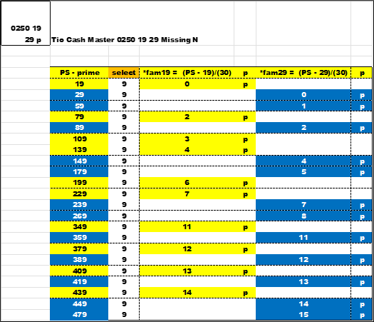
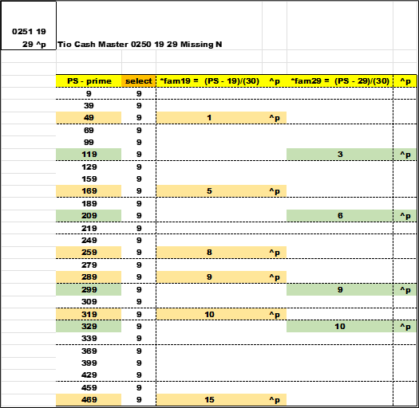
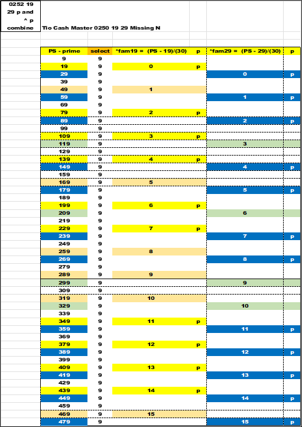
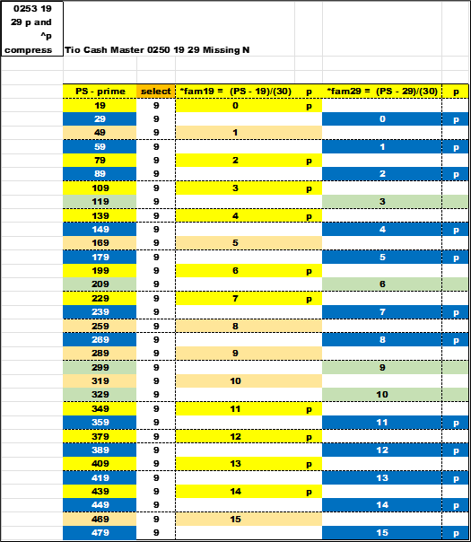

The first chart is the prime (p) numbers that satisfy *fam19 and *fam29.
The *fam19 primes are in yellow.
The *fam29 primes are in blue.
The second chart is the non-prime (^p) numbers that satisfy the *fam19 and *fam29. The *fam19 non-primes are green. The *fam29 non-primes are an off-yellow color. Any value not calculated will be empty and white.
Next , combine all the data (sort together) and sort in PS order. All the PSLs are present and in sequential order for both *fam.
Finally , sort off the blank data , the unwanted 1/3. Compress the data to show only *fam19 and *fam29 data. The view now revels p and ^p for *9 by *fam.
Again , there is order here.
Chapter Recap Missing N